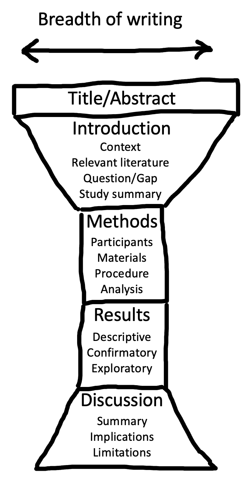

All of the effort you put into designing and running an effective experiment may be wasted if you cannot clearly communicate what you did. Writing is a powerful tool - though you contribute to the conversation only once, it enables you to speak to a potentially infinite number of readers. So it’s important to get it right! In this chapter, we’ll provide some guidance on how to write scientific papers – the primary method for reporting on experiments – clearly, reproducibly, and responsibly.211 Clarity of communication was a founding principle of modern science. Early proto-scientists conducting alchemical experiments often made their work deliberately obscure - even writing in cryptic codes - so that others could not discover the ‘powerful secrets of nature’. Pioneers of scientific methodology, like Francis Bacon and Robert Boyle, pushed instead for transparency and clarity. Notoriously, Issac Newton (originally an alchemist and later a scientist), continued to write in a deliberately obscure fashion in order to “protect” his work (Heard 2016).
What is the purpose of writing? “Telepathy, of course” says Stephen King (King 2000). The goal of writing is to transfer information from your mind to the reader’s as effectively as possible. Unfortunately, for most of us, writing clearly does not come naturally; it is a craft we need to work at.
One of the most effective ways to learn to write clearly is to read and to imitate the writing you admire. Many scientific articles are not clearly written, so you will need to be selective in which models you imitate. Fortunately, as a reader, you will know good writing when you see it – you will feel like the writer is seamlessly transferring ideas from their mind to yours. When you come across writing like that, try to find more work by the same author. The more good scientific writing you are exposed to, the more you will develop a sense of what works and what does not. You may pick up bad habits as well as good ones (we sure have!), but over time, your writing will improve if you make a conscious effort to weed out the bad, and keep the good.
There are no strict rules of clear writing, but there are some generally accepted conventions that we will share with you here, drawing from both general style guides and those specific to scientific writing (Zinsser 2006; Heard 2016; Gernsbacher 2018).
A scientific paper is not like a novel – rather than reading from beginning to end, readers typically jump between sections to efficiently extract the information most relevant to them (Doumont 2009). This “random access” is possible because research articles typically follow the same conventional structure (see Figure 14.1). The main body of the article includes four main sections: Introduction, Methods, Results, and Discussion (IMRaD).212 In the old old days, there were few conventions – scientists would share their latest findings by writing letters to each other. But as the number of scientists and studies increased, this approach became unsustainable. The IMRaD structure gained traction in the 1800s and became dominant in the mid-1900s as scientific productivity rapidly expanded in the post-war era. We think IMRaD style articles are a big improvement, even if it is nice to receive a letter every now and again. This structure has a narrative logic: what’s the knowledge gap? (introduction); how did you address it? (methods); what did you find? (results); what do the results mean? (discussion).
Structure helps writers as well as readers. Try starting the writing process with section headings as a skeleton structure, then flesh it out, layer by layer. In each section, make a list of the key points you want to convey, each representing the first sentence of a new paragraph. Then add the content of each paragraph and you’ll be well on your way to having a full first draft of your article.
Imagine that the breadth of focus in the body of your article has an “hourglass” structure (Figure 14.1). The start of the introduction should have a broad focus, providing the reader with the general context of your study. From there, the focus of the introduction should get increasingly narrow until you are describing the specific knowledge gap or problem you will address and (briefly) how you are going to address it. The methods and results sections are at the center of the hourglass because they are tightly focused on your study alone. In the discussion section, the focus shifts in the opposite direction, from narrow to broad. Begin by summarizing the results of your study, discuss limitations, then integrate the findings with existing literature and describe practical and theoretical implications.
 Figure 14.1: Conventional structure of a research article. The main body of the article consists of Introduction, Methods, Results, and Discussion (IMRaD) sections.
Research articles are often packed with complex information; it is easy for readers to get lost. A “cross reference” is a helpful signpost that tells readers where they can find relevant additional information without disrupting the flow of your writing. For example, you can refer the reader to data visualizations by cross referencing to figures or tables (e.g., “see Figure 1”), or additional methodological information in the supplementary information (e.g., “see Supplementary Information A”).
One useful trick for structuring complex arguments is to cross reference your research aims/hypotheses with your results. For example, you could introduce numbered hypotheses in the introduction of an article and then refer to them directly when reporting the relevant analyses and results. These cross references can serve to remind readers how different results or analyses relate back to your research goals.
Writing an article is like drawing a human form. If you begin by sketching the clothes, you risk adding beautiful textures onto an impossible shape. Instead, you have to start by understanding the underlying skeleton and then gradually adding layers until you can visualize how cloth hangs on the body. The structure of an article is the “skeleton” and the paragraphs and sentences are the “flesh”. Only once you have a solid outline in place, should you start thinking about the paragraphs and sentences that will realize it.
Ideally, each paragraph should correspond to a single point in the article’s outline, with the specifics necessary to convince the reader embedded within. “P-E-E-L” (Point-Explain-Evidence-Link) is a useful paragraphing structure, particularly in the introduction and discussion sections. First, state the paragraph’s message succinctly in the first sentence (P). The core of the paragraph is dedicated to further explaining the point and providing evidence (E-E; you can also include a third ‘E’ — an example). At the end of the paragraph, take a couple of sentences to remind the reader of your point and set up a link to the next paragraph.
Since each sentence in a paragraph has a purpose, you can compose and edit the sentence by asking how its form serves its purpose. For example, short sentences are great for making strong initial points. On the other hand, if you only use short sentences your writing may come across as monotonous and robotic. Try varying the sentence length to give your writing a more natural rhythm. Just avoid trying to cram too much information into the same sentence; very long sentences can be confusing and difficult to process.
You can also use sentence structure as a scaffold to support the reader’s thinking. Start sentences with something the reader already knows. For example, rather than writing “We performed a between-subjects t-test comparing performance in the experimental and control groups to address the cognitive dissonance hypothesis”, write “To address the cognitive dissonance hypothesis, we compared performance in the experimental group and control group using a between-subjects t-test.”
Human readers are good at processing narratives about people. Yet often scientists compromise the research narrative by removing themselves from the process, sometimes even using awkward grammatical constructions to do so. For example, scientists sometimes write “the data were analysed” or, worse, “an analysis of the data was carried out.” Many of us were taught to write sentences like these, but its clearer to just say “We analyzed the data”.
Similarly, many of us tend to hide our views with frames and caveats: “[It is believed that/Research indicates that/Studies show that] money leads to increased happiness (Frog & Toad, 1963).” If you truly do believe that money causes happiness, you should simply assert it, with a citation if necessary. Save the caveats for cases where someone believes that money causes happiness, but it’s not you. Emphasize uncertainty where you in fact feel that uncertainty is warranted and readers will take your doubts more seriously.
Scientific writing has a reputation for being dry, dull, and soulless. While it’s true that writing research articles is more constrained than writing fiction, there are still ways to surprise and entertain your reader with metaphor, alliteration, and even humor. As long as your writing is clear and accurate, we see no reason why you cannot also make it enjoyable. Enjoyable articles are easier to read and more fun to write.213 One of our favorite examples of an enjoyable article is Cutler (1994), a delightful piece that uses the form of the article to make a point about human language processing. Read it: you’ll see!
Here are a few more pieces of advice about expressing yourself clearly:
Be explicit. Avoid vagueness and ambiguity. The more you leave the meaning of your writing to your reader’s imagination the greater the danger that different readers will imagine different things! So be direct and specific.
Be concise. Maximize the signal to noise ratio in your writing by omitting needless words and removing clutter (Zinsser 2006). For example, say we investigated rather than we performed an investigation of and say if rather than in the event that. Don’t try to convey everything you know about a topic – a research report is not an essay. Include only what you need to achieve the purpose of the article and exclude everything else.
Be concrete. Concrete examples make abstract ideas easier to grasp. But some ideas are just hard to express in prose. Diagrams can be very helpful in these cases. For example, it may be clearer to illustrate a complex series of exclusion criteria using a flow chart rather than text. You can even use videos and screen capture software to demonstrate experimental tasks or researcher interactions with participants (Heycke and Spitzer 2019).
Be consistent. Referring to the same concept using different words can be confusing. It may not be clear if you are just using a synonym or referring to a different concept. For example, in everyday conversation, “replication” and “reproducibility” may sound like two different ways to refer to the same thing, but in scientific writing, these two concepts have different technical definitions, so we should not use them interchangeably. Define each technical term once and then use the same term throughout the manuscript.
Adjust to your audience. Most of us adjust our conversation style depending on who we’re talking to; the same principle applies to good writing. Knowing your audience is more difficult with writing, because we cannot see the reader’s reactions and adjust accordingly. Nevertheless, we can make some educated guesses about who our readers might be. For example, if you are writing an introductory review article, you may need to pay more attention to explaining technical terms compared with writing a research article for a specialty journal.
Check your understanding. Unclear writing can be a symptom of unclear thinking. If an idea doesn’t make sense in your head, how will it ever make sense on the page? In fact, trying to communicate something in writing is an excellent way to probe your understanding and expose logical gaps in your arguments. So if you are finding it difficult to write clearly, stop and ask yourself do I know what want to say? If the problem is unclear thinking, then you need to address that first, for example by consulting a textbook or colleague/advisor.
Use acronyms sparingly. It’s tempting to replace lengthy terminology with short acronyms — why say “cognitive dissonance theory” when you can say “CDT”? Unfortunately, acronyms can increase the reader’s cognitive burden and cause misunderstandings.214 A. Barnett and Doubleday (2020) found that acronyms are widely used in research articles and argued that they undermine clear communication. Here is one example of text Barnett and Doubleday extracted from a 2019 publication to illustrate the point: “Applying PROBAST showed that ADO, B-AE-D, B-AE-D-C, extended ADO, updated ADO, updated BODE, and a model developed by Bertens et al. were derived in studies assessed as being at low risk of bias.” For example, if you shorten “odds ratio” to “OR”, the reader has to take the extra step of translating “OR” back to “odds ratio” every time they encounter it. The problem multiplies as you introduce more acronyms into your article. Worse, for some readers, “OR” tends to mean “operating room”, not “odds ratio.” Acronyms can be useful, but usually only when they are widely used and understood.
The clearest and most effortless-seeming scientific writing has probably gone through extensive revision to appear that way. It can surprise many students to know the amount of revision that has gone into many “breezy” articles. For example, Tversky and Kahneman repeatedly drafted and re-drafted each word of their famous articles on judgment and decision-making, hunched over the typewriter together (M. Lewis 2016).
Think of the article you are writing as a garden. Your first draft may be an unruly mess of intertwined fronds and branches. Several rounds of pruning and sculpting will be needed before your writing reaches its most effective form. You’ll be amazed how often you find words to omit, terms you can define more precisely, or elaborate sentence structures you can simplify.
It can be difficult to judge if your own writing has achieved its telepathic goal, however, especially after several rounds of revision. If possible, try to get feedback from somebody in your target audience. Their feedback – even if not wholly positive – will give you a good sense of how much of your argument they understood (and agreed with).215 Seek out people who are willing to tell you that your writing is not good! They may not make you feel good, but they will help you improve.
Many research results are not reproducible -— that is, the numbers and graphs that they report can’t be recreated by repeating the original analyses – even on the original data. As we discussed in Chapter 3, a lack of reproducibility is a big problem for the scientific literature; if you can’t trust the numbers in the articles you read, it’s much harder to build on the literature.
Fortunately, there are number of tools and techniques available that you can use to write fully reproducible research reports. The basic idea is to create an unbroken chain that links every single part of the data analysis pipeline, from the raw data through to the final numbers reported in your research article. This linkage enables you – and hopefully others as well – to trace the provenance of every number and recreate (reproduce) it from scratch.
There are at least three reasons to write reproducible reports. First, data analysis is an error-prone activity. Without safeguards in place, it can be easy to accidentally overwrite data, mislabel experimental conditions, or copy and paste the wrong statistics. One study found that nearly half of around 30,000 published psychology papers contained statistical reporting errors; 10% of reported p-values were inconsistent with other reported details of the statistical test, and 1.6% were “grossly” inconsistent (the difference between the p-value and the test statistic meant that one value implied statistical significance and the other did not) (Nuijten et al. 2016). You can reduce opportunities for error by adopting a reproducible analysis workflow that avoids error-prone manual actions, like copying and pasting.
Second, technical information about data analysis can be difficult to communicate in writing. Prose is often ambiguous and authors can inadvertently leave out important details (Hardwicke et al. 2018). By contrast, a reproducible workflow documents the entire analysis pipeline from raw data to research report exactly as it was implemented, describing the origin of any reported values and allowing readers to assess, verify, and repeat the analysis process.
Finally, reproducible workflows are typically more efficient workflows. For example, you may realize you forgot to perform data exclusions and need to rerun the analysis. You may produce a graph and then decide you’d prefer a different color scheme. Or perhaps you want to output the same results table in a PDF document and in a PowerPoint slide. In a reproducible workflow, all of the analysis steps are scripted, and can be easily re-run at the click of a button. You (and others) can also re-use parts of your code in other projects, rather than having to re-write everything from scratch.
Below we outline some general principles of reproducible writing. These can be put in practice in a number of different software ecosystems. We recommend RMarkdown, a way of writing data analysis code in R so that it compiles into spiffy documents or even websites. (This book was written in RMarkdown). Appendix B gives an introduction to the nuts and bolts of using RMarkdown to create scientific papers.
Never break the chain. Every step of the analysis pipeline should be linked together programmatically (i.e., by computer code). This allows everything to be re-run from scratch without any requiring any manual actions.
Script everything. Try to ensure that each step of the analysis pipeline is executed by computer code rather than manual actions, like copying and pasting or directly editing spreadsheets. This ensures that every step is documented in its most literal form, ensuring it can be reproduced. Imagine, for example, that you decided to re-code a variable in your dataset. You could use the “find and replace” function in Excel, but this action would not be documented – you might even forget that you did it! A better option would be to write an R script.
Use literate programming. The meaning of a chunk of computer code is not always obvious to another user, especially if they’re not an expert. Indeed, we frequently look at our own code and scratch our heads, wondering what on earth it’s doing. To avoid this problem, try to structure your code around plain language comments that explain what it should be doing, a technique known as “literate programming” (Knuth 1992).
Use defensive programming. Errors can still occur in scripted analyses. Defensive programming is a series of strategies to help anticipate, detect, and avoid errors in advance. A typical defensive programming tool is the inclusion of tests in your code. For example, you might test if a variable storing reaction times has taken on values below zero (which should be impossible). If the test passes, the analysis pipeline continues; if the test fails, the pipeline halts and an error message appears to alert you to the problem.
Use free/open-source software and programming languages. If possible, avoid using commercial software, like SPSS or Matlab, and instead use free, open-source software and programming languages, like JASP, Jamovi, R, or Python. This practice will make it easier for others to access, reuse, and verify your work – including yourself!216 Several of us have libraries of old Matlab code; it’s terrible to have to ask yourself whether it’s worth the price of another year’s license in order to check an analysis.
Use version control. In Chapter 13, we introduced the benefits of version control – a great way to save your analysis pipeline incrementally as you build it, allowing you to roll-back to a previous version if you accidentally introduce errors.
Preserve the computational environment. Even if your analysis pipeline is entirely reproducible on your own computer, you still need to consider whether it will run on somebody else’s computer, or even your own computer after software updates. You can address this issue by documenting and preserving the computational environment in which the analysis pipeline runs successfully. Various tools are available to help with this, including Docker, Code Ocean, renv (for R), and pip (for Python).
We would love to leave it there and watch you walk off into the sunset with a spring in your step and a reproducible report under your arm. Unfortunately, we have to admit that writing reproducibly can create a few practical difficulties when it comes to collaboration. A major aspect of collaboration is exchanging comments and inline text edits with co-authors. You can do this exchange with R Markdown files and Git, but these tools are not as user-friendly as, say, Word or Google Docs, and some collaborators will be completely unfamiliar with them. Most journals also expect articles to be submitted as Word documents. Outputting R Markdown files to Word can often introduce formatting issues, especially for moderately complex tables. So until more user-friendly tools are introduced, some compromise between reproducibility and collaboration may be necessary. Here are two workflow styles for you to consider.
First, the maximal reproducibility approach. If your collaborators are familiar with R Markdown and you don’t mind exchanging comments and edits via Git, then you can maintain a fully reproducible workflow for your project, at least up until you release a preprint of your work. The journal submission and publication process may still introduce some issues such as incorporating changes made by the copy editor, but at least your submitted manuscript (and the preprint you have hopefully posted) will be fully reproducible.
Second, the two worlds approach. This workflow is a bit clunky, but it facilitates collaboration and maintains reproducibility. First, write your results section in R Markdown and generate a Word document. Then, write the remainder of the manuscript in Word, including incorporating comments and changes from collaborators. When you have a final version, copy and paste the abstract, introduction, methods, and discussion into the R Markdown document.217 You can also incorporate Google Docs into this workflow – we find that cloud platforms like Docs are especially useful when gathering comments from multiple collaborators on the same document. Unfortunately, you cannot generate a Google Doc from R Markdown, so you will need to copy and paste. Integrating any changes made to the results section back into the R Markdown requires a bit more effort, either using manual checking or Word’s “compare documents” feature. The advantage of this approach is that you have a reproducible document and your collaborators have not had to deviate from their preferred workflow. Unfortunately, it requires more effort from you and is slightly more error-prone than the maximal reproducibility approach.
As a scientific writer, you have both professional and ethical responsibilities. You must communicate all relevant information about your research so as to enable proper evaluation and verification by other scientists. It is also important not to overstate your findings and carefully calibrate your conclusions to the available evidence (Hoekstra and Vazire 2020). If errors are found in your work, you must respond and correct them when possible (Bishop 2018). Finally, you must meet scholarly obligations with regards to authorship and citation practices.
Back in school, we all learned that getting the right answer is not enough – you need to demonstrate how you arrived at that answer in order to get full marks. The same expectation applies to research reports. Don’t just tell the reader what you found, tell them how you found it.218 It can be easy to overlook important details, especially when you reach the end of a project. Looking back at your study preregistration can be a helpful reminder. Reporting guidelines for different research designs can also providfe useful checklists (Appelbaum et al. 2018). That means describing the methods in full detail, including providing the data, materials, and analysis scripts.
In a journal article, you typically have some flexibility in terms of how much detail you provide in the main body of the article and how much you relegate to the supplementary information. Readers have different needs; some may just want to know the highlights, and some will need detailed methodological information in order to replicate your study. As a rule of thumb, try to make sure there is nothing relegated to the supplementary information that might surprise the reader. You certainty should not use the supplementary information to hide important details deliberately or use it as a disorganized dumping ground – the principles of clear writing still apply!
Here are a few more guidelines for responsible writing:
Acknowledge limitations. No study is perfect. Even the most rigorously designed research will have limitations, simply because doing science is hard!219 Though some limitations can be avoided, most are an inherent part of doing research rather than a failing by the researcher. A limitation of a car is that it cannot fly – we do not blame the manufacturer for this, but we do expect them to be honest about their cars being flightless. For example, if your sample consisted only of university students or you only used a few different stimuli, the study may have limited generalizability. Think carefully about the limitations of your study, state them clearly, and consider how they impact your conclusions (B. Clarke et al. 2023).
Don’t overclaim. Scientists often feel they are (and unfortunately, often are) evaluated based on the results of their research, rather than the quality of their research. Consequently, it can be tempting to make bigger and bolder claims than are really justified by the evidence. Think carefully about the limitations of your research and calibrate your conclusions to the evidence, rather than what you wish you were able to claim. Ensure that your conclusions are appropriately stated throughout the manuscript, especially the title and abstract.
Discuss, don’t debate. The purpose of the discussion section is to help the reader interpret your research. Importantly, it is not a debate – don’t feel the need to argue dogmatically for a particular position or interpretation. You should discuss the strengths and weaknesses of the evidence, and the relative merits of different interpretations. For example, perhaps there is a potential confounding variable that you were unable to eliminate with your research design. The reader might be able to spot this themselves, but regardless, its your responsibility to highlight it. Perhaps on balance you think the confound is unlikely to explain the results - that’s fine, but you need to explain your reasoning to the reader.
Disclose conflicts of interest and funding. Researchers are usually personally invested in the outcomes of their research and this investment can lead to bias (for example, overclaiming or selective reporting). But sometimes the potential personal gains for a researcher rise above a particular threshold and are considered conflicts of interest. Where the threshold lies is not always completely clear. The most obvious conflicts of interest occur when you stand to benefit financially from the outcomes of your research (for example a pharmaceutical company evaluating their own drug). If in doubt, disclose it. You should also disclose any funding you received for the research, partly because this is often a requirement of the funder, and partly because it may represent a conflict of interest. To avoid ambiguity, you should also disclose when you do not have a conflict of interest or funding to declare.
Report transparently. In Chapter 11, you learned about the problem of selective reporting and how it can bias research results and conclusions. There are several ways to avoid this issue in your own work. First, assuming you have reported everything, include a statement in the methods section that explicitly says so. A statement suggested by Simmons, Nelson, and Simonsohn (2012) is “We report how we determined our sample size, all data exclusions (if any), all manipulations, and all measures in the study.” If you have preregistered your study, clearly link to the preregistration and state whether you deviated from your original plan. You can include a detailed preregistration disclosure table in the supplementary information and highlight any major deviations in the methods section. In the results section, clearly identify (e.g., with sub-headings) which analyses were pre-planned and included in the preregistration (confirmatory) and which were not planned (exploratory).
It is not your responsibility to never make mistakes. But it is your responsibility to respond to errors in a timely, transparent, and professional manner (Bishop 2018).220 As jazz musician Miles Davis once said, “If you hit a wrong note, it’s the next note that you play that determines if it’s good or bad.” Regardless of how the error was identified (e.g., by yourself or by a reader), we recommend contacting the journal and requesting that they publish a correction statement (sometimes called an erratum). Several of us have corrected papers in the past. If the error is serious and cannot be fixed, you should consider retracting the article.
A correction/retraction statement should include the following information:
Citing prior work that your study builds upon ensures that researchers receive credit for their contributions and helps readers to verify the basis of your claims. You should certainly avoid copying the work of others and presenting it as your own (see Chapter 4 for more on plagiarism). Try to be explicit about why you are citing a source, for example, does it provide evidence to support your point? Is it a review paper that gives the reader useful background? Or is it a description of a theory you are testing?
Make sure you read articles before you cite them. Stang, Jonas, and Poole (2018) reports a cautionary tale in which a commentary criticizing a methodological tool was frequently cited as supporting the use of that tool! It seems that many authors had not read the paper they were citing, which is both misleading, and pretty embarrassing.
Try to avoid selective or uncritical citation. Only citing research that supports your argument, and ignoring research that doesn’t, is misleading. You should provide a balanced account of prior work, including contradictory evidence. Make sure to evaluate and integrate evidence from prior studies, rather than simply describing them. Remember – every study has limitations.
Writing a scientific article can be a rewarding endpoint for the process of doing experimental research. But writing is a craft, and writing clearly – especially about complex and technical topics – can require substantial practice and many drafts. Further, writing about research comes with ethical and professional responsibilities that are different than the burdens of other kinds of writing. A scientific author must work to ensure the reproducibility of their findings and report on those findings responsibly, noting limitations and weaknesses as well as strengths.